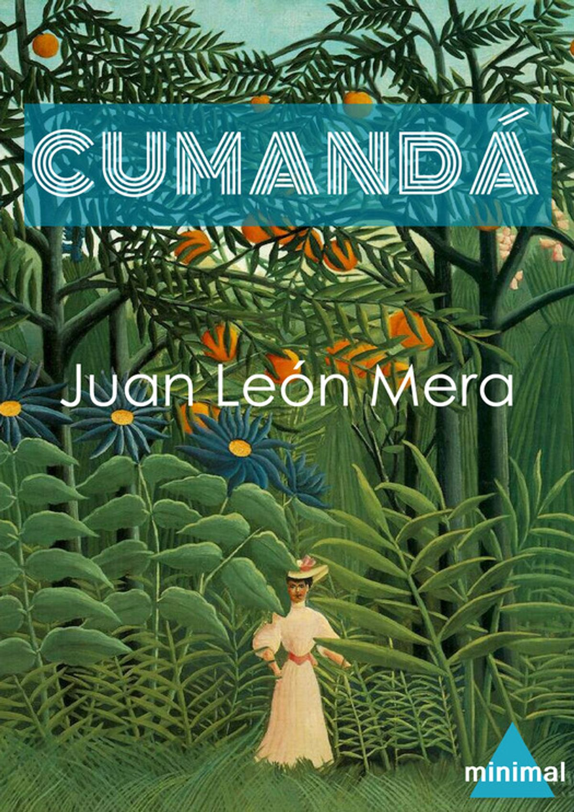
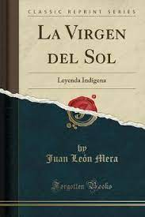
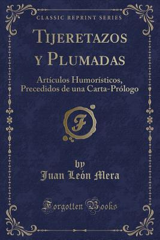
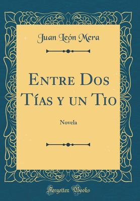

Juan Leon Mera
Obras mas destacadas

- Cumandá o Un drama entre salvajes
- Fecha de publicación original: 1879
- Autor: Juan León Mera
- Género: Ficción
- Idioma original: Idioma español
- Ambientada en: Ecuador

- La virgen del sol, leyenda indiana
- Autor: Mera, Juan León, 1832-1894
- Lugar de producción:Quito, Imprenta de los huerfanos de Valencia, 1861
- Idioma original:Español
- Materias:Poesía ecuatoriana-Siglo 19º

- Tijeretazos y plumadas.
- Autor: Mera, Juan León, 1832-1894
- Lugar de producción:Madrid, 1903
- Idiomas original: Español
- Ambientada en: Ecuador

- Entre dos tias y un tio de Juan León Mera.
- Autor: Mera, Juan León, 1832-1894
- Descripción: Novela Entre dos tias y un tio de Juan León Mera.
- Lugar de producción:Quito, Imprenta de los huerfanos de Valencia, 1861
- Idiomas original: Español
- Himno Nacional de la republicA del Ecuador.
- Himno Nacional de Ecuador
- Nombre alternativo¡Salve, Oh Patria!
- Letra Juan León Mera, 26 de noviembre de 1865
- Música: Antonio Neumane, 10 de agosto de 1866 (155 años)
- Adoptado 10 de agosto de 1870
VOLVER A LA PAGINA PRINCIPAL
BIBLIOGRAFIA
DATOS PERSONALES